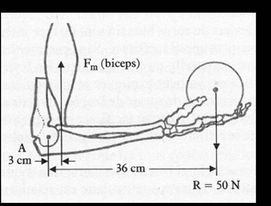
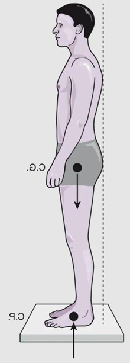
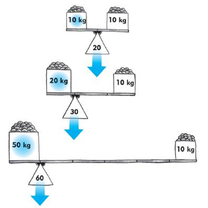
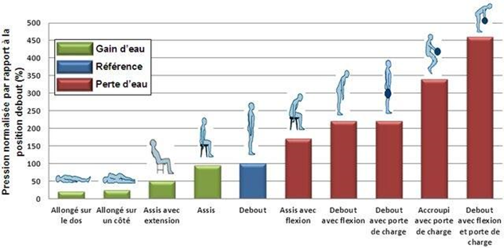

Biomécanique
La biomécanique applique les principes de la mécanique (forces, moments, leviers) au corps humain en mouvement. Elle permet de quantifier les contraintes internes (charge sur les disques intervertébraux, sur les tendons, sur les capsules articulaires) générées par les tâches de travail. C'est l'outil principal pour comprendre pourquoi certaines postures et manutentions sont nocives même quand elles ne sont pas perçues comme telles par le travailleur.
Table des matières
- Force, moment et bras de levier
- Système de leviers du corps humain
- Charge sur les disques intervertébraux
- Désavantage mécanique
- Application terrain
- Ressources
Force, moment et bras de levier
La contraction musculaire sert souvent à générer un mouvement de rotation autour d'une articulation. Les Articulations sont des points d'appui (pivots) autour desquels se produit la rotation.
Le moment de force correspond à la tendance d'une force à produire une rotation.
$$M = F \times d$$
Où
- M = moment de force (N·m).
- F = force (N).
- d = bras de levier, distance entre la ligne d'action de la force et l'axe de rotation (m).
{kind=link}

Toucher l'image pour l'agrandirSystème de leviers du corps humain
Les muscles tirent sur les os via les tendons, et les os agissent comme des leviers articulés autour des articulations.
Forces externes à combattre
- Force gravitationnelle (poids des segments corporels et des charges manipulées).
- Force de friction.
- Forces externes appliquées par l'environnement.
Pour qu'un mouvement se produise ou pour qu'une posture soit maintenue, la somme des moments musculaires doit équilibrer la somme des moments des forces externes.
Charge sur les disques intervertébraux
L'application des principes biomécaniques au rachis lombaire est cruciale en ergonomie de la manutention (voir Manutention manuelle et Anatomie et biomécanique du dos).
{kind=link}

Toucher l'image pour l'agrandir{kind=link}

Toucher l'image pour l'agrandirQuand on penche le tronc vers l'avant pour saisir une charge
- Les muscles érecteurs du rachis doivent générer un moment de force pour contrebalancer le moment dû au poids du tronc et de la charge.
- Comme les érecteurs du rachis ont un bras de levier court (quelques centimètres), ils doivent exercer une force très grande pour équilibrer la charge tenue à bras tendus (avec un bras de levier de 60 à 80 cm).
- Cette force se traduit en compression sur les disques intervertébraux L4-L5 et L5-S1.
{kind=link}

Toucher l'image pour l'agrandirConséquence pratique
Une charge de 10 kg tenue à bras tendus peut générer plusieurs centaines de kilogrammes de compression sur le disque L5-S1.
Désavantage mécanique
La position des insertions musculaires place souvent les muscles en position de désavantage mécanique : le bras de levier musculaire est très court par rapport au bras de levier de la charge externe.
- Plus une charge est éloignée de l'axe de rotation, plus le désavantage augmente.
- À l'inverse, on peut diminuer le travail musculaire en approchant la charge de l'axe de rotation.
C'est le fondement biomécanique de la règle d'or : garder la charge près du corps.
Application terrain
La biomécanique fournit les arguments quantitatifs pour les interventions en mine.
| Situation minière | Enjeu biomécanique |
|---|---|
| Soulever un boulon d'ancrage au sol | Bras de levier maximal, compression L5-S1 élevée |
| Manipuler un écailleur en hauteur | Moment statique épaule + cervical, charge sur la coiffe des rotateurs |
| Pousser un wagon de mine sur rail | Force horizontale, posture asymétrique, sollicitation du rachis en rotation |
| Sortir d'une cabine de chargeuse | Combinaison flexion-torsion du rachis, risque accru après Vibrations corps entier |
| Transporter une charge à une main | Moment latéral, sollicitation asymétrique de la colonne |
Leviers ergonomiques issus de la biomécanique
- Élever la zone de prise de la charge (75 cm idéal) pour réduire la flexion du tronc.
- Approcher la charge du corps pour réduire le bras de levier.
- Fournir des aides à la manutention (palans, chariots, ponts roulants) pour transférer la charge à l'équipement.
- Adapter la hauteur des surfaces de travail à la taille des travailleurs (variabilité anthropométrique).
- Limiter les distributions asymétriques de charge (charge à une seule main) et les torsions.
Ressources
| Document | Type | Source |
|---|---|---|
| Cours SST 1162 - S2 - Biomécanique et moments de force | Cours | UQAT |
| Occupational biomechanics | Manuel | Chaffin, Andersson, Martin, 2006 |
| Équation NIOSH de levée de charges | Outil | NIOSH |
Articles wiki connexes
Pages qui pointent ici (13)
- 🏠 Wiki Ergonomie, mines Ergonomie
- 📖 Glossaire ergonomie Ergonomie
- Analyse posturale Ergonomie
- Anatomie et biomécanique Ergonomie
- Anatomie et biomécanique du dos Ergonomie
- Articulations Ergonomie
- Conception ergonomique des postes Ergonomie
- Courants de l'ergonomie Ergonomie
- Manutention manuelle Ergonomie
- Postures contraignantes Ergonomie
- Système musculaire Ergonomie
- Système musculosquelettique Ergonomie
- Travail répétitif Ergonomie